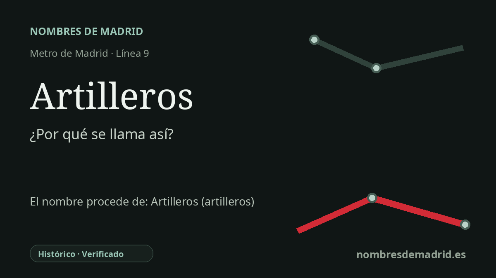

Publicado el · Investigación de Nombres de Madrid · Cómo verificamos cada origen · 5 fuentes consultadas
Respuesta rápida
Artilleros toma su nombre de la calle del Pico de los Artilleros, junto a la estación. La calle recuerda el campo de tiro y maniobras de artillería arrendado en Moratalaz desde 1861 y con ejercicios documentados hasta 1927.
La historia del nombre
Artilleros es un nombre de transporte heredado de la calle situada junto a la estación: la calle del Pico de los Artilleros. El Consorcio Regional de Transportes enumera accesos de la estación en esa vía, incluido el acceso 'Pico de Artilleros', de modo que el vínculo inmediato del nombre es local y topográfico.
Detrás del nombre de la calle hay un paisaje de Moratalaz mucho más antiguo. Antes de los bloques de viviendas, los túneles del metro y el corredor de la A-3, esta zona del este de Madrid estaba recorrida por arroyos, caminos, campos, tejares y fincas dispersas. Uno de sus usos decimonónicos fue militar: un campo de tiro y maniobras de artillería.
La historia local de Ricardo Márquez Ruiz recoge que el campo de maniobras de artillería se arrendó al conde de Polentino en noviembre de 1861. La misma investigación indica que el camino que partía de la calle Granada, en Pacífico, tuvo que restaurarse a principios de 1886 por el paso de tropas y artillería; que el campo de tiro fue declarado de utilidad pública en 1907; y que la última maniobra localizada en las fuentes tuvo lugar en junio de 1927.
Así, Artilleros conserva de forma breve una antigua geografía militar. La estación abrió con el primer tramo de la línea 9 de Metro, entre Sainz de Baranda y Pavones, el 31 de enero de 1980, cuando Moratalaz era ya un distrito moderno y densamente urbanizado. El nombre del metro no inventó esa memoria, sino que llevó al plano de transporte una denominación viaria ya existente.
La explicación mejor apoyada no es una dedicatoria a artilleros concretos ni a un regimiento, sino al topónimo creado por el antiguo campo de tiro de artillería. La corrección útil es emplear la forma completa de la calle, calle del Pico de los Artilleros, y tratar las fechas de 1861, 1907 y 1927 como datos de investigación histórica local, no como actos de denominación de Metro.